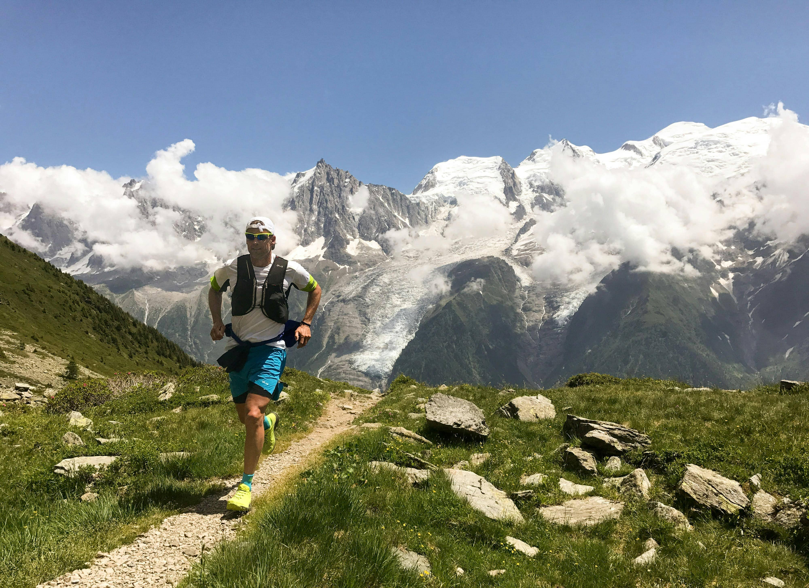
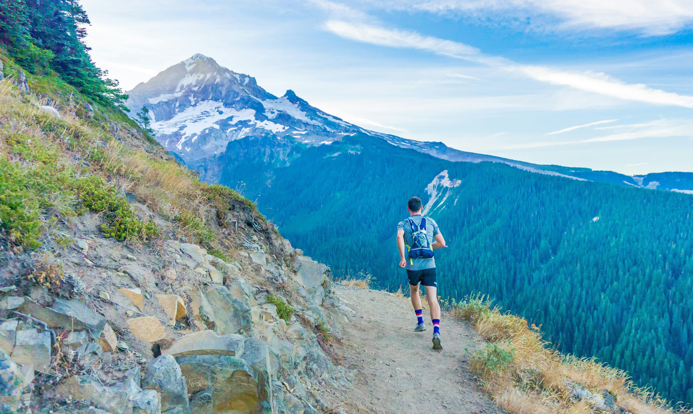
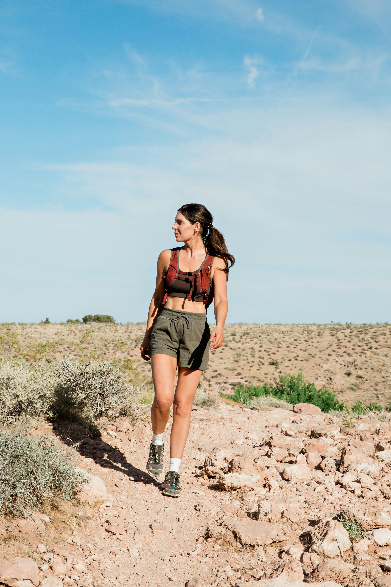
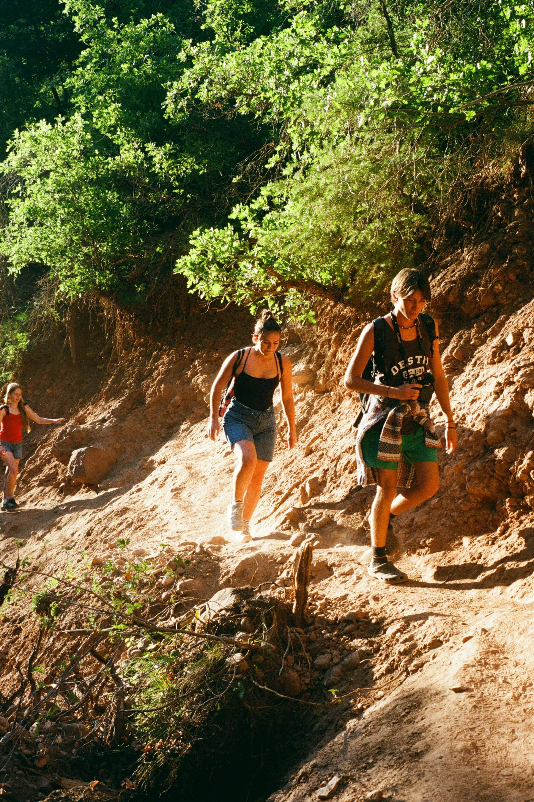
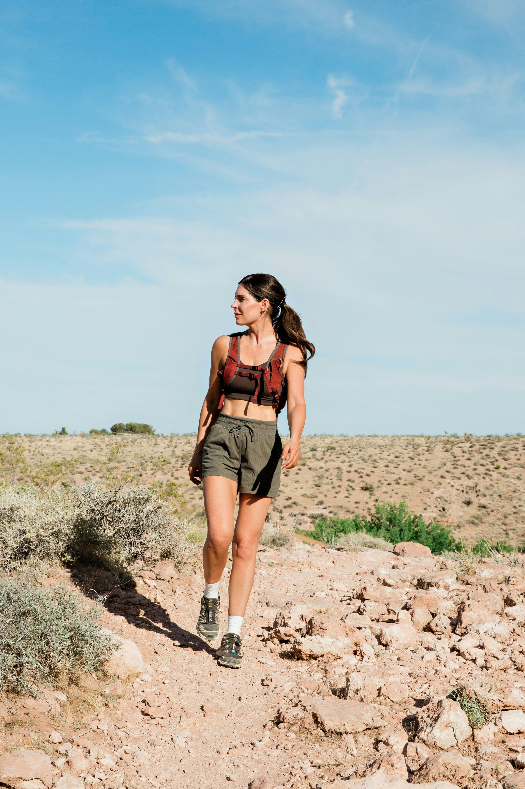
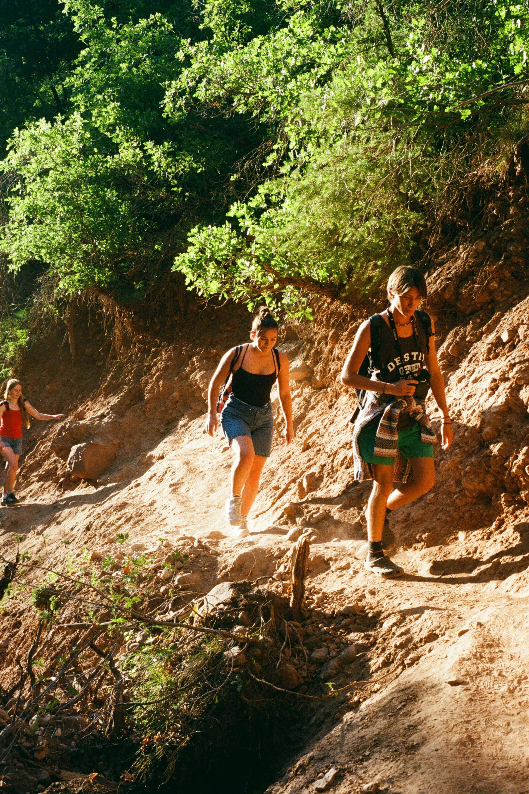
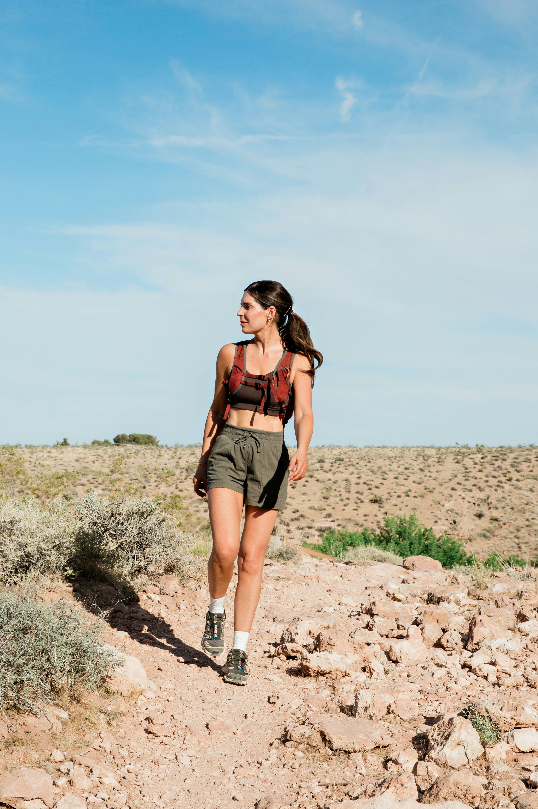
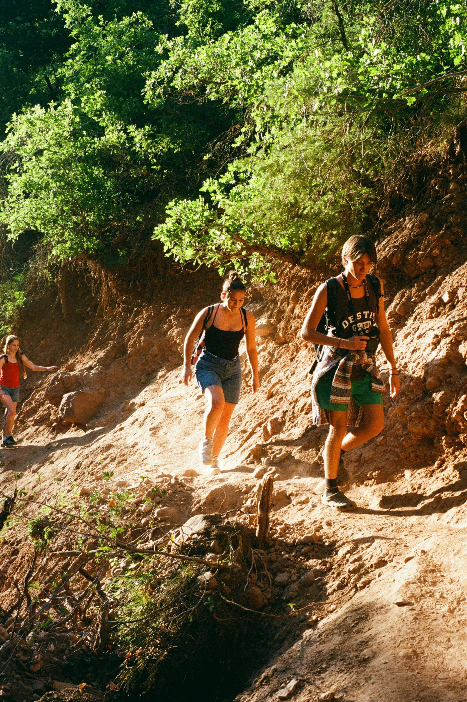
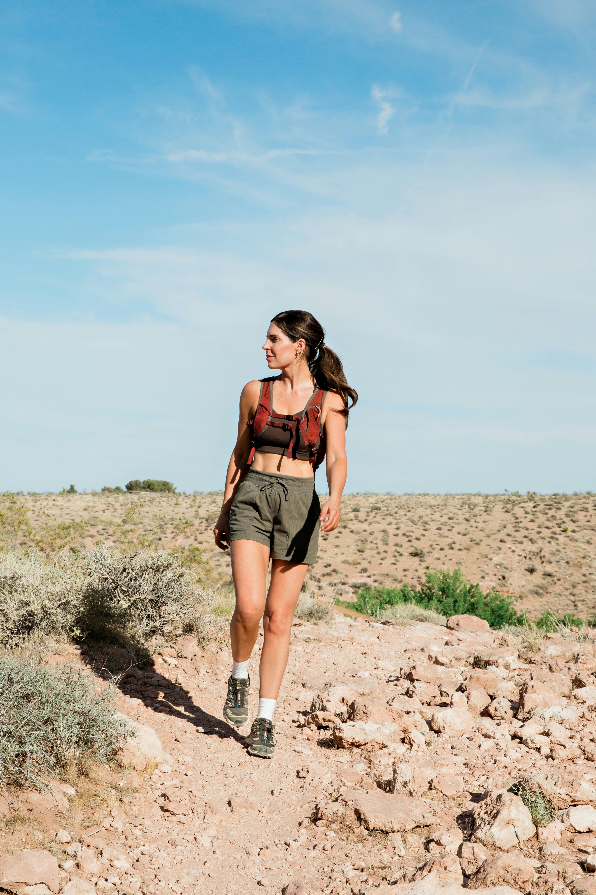
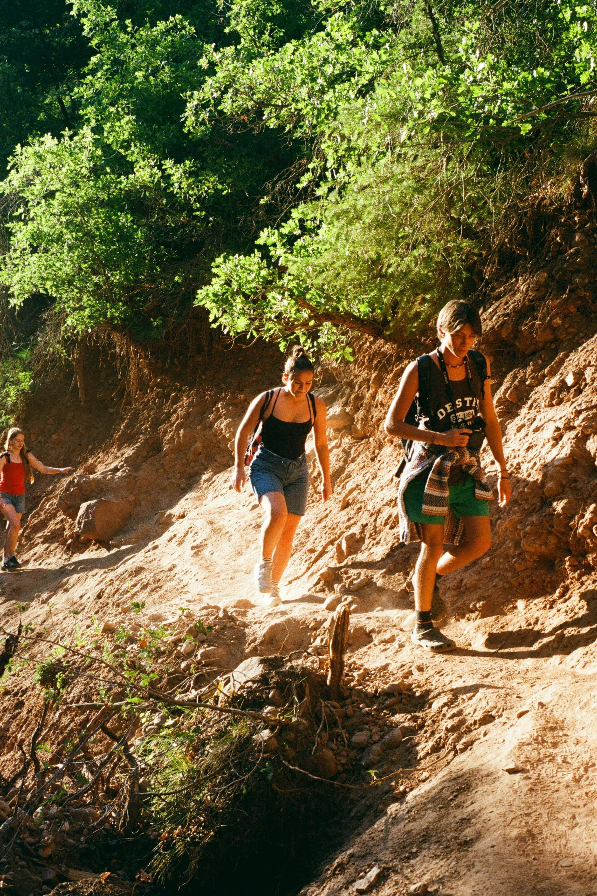

 





Nas trilhas, o tempo desacelera e a natureza guia o caminho. Cada passo revela uma nova paisagem, cada pausa carrega um respiro de liberdade. Caminhar por entre árvores, pedras e sons é se reconectar com o essencial.
Passos em Silêncio, Paisagens que Falam

